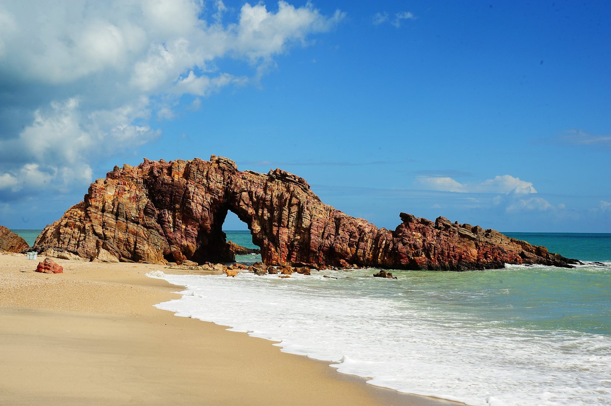

Praias do Brasil
O Brasil é um dos países tropicais conhecidos pelas praias mais bonitas do planeta. confira as melhiores praias para esse verão.
Jericoacora

Jericoacoara é uma praia localizada na vila homônima, no município de Jijoca de Jericoacoara, no estado do Ceará, no Brasil. Está localizada a 295 km a oeste da capital do estado, Fortaleza. Foi eleita em 1994 pelo jornal estadunidense The Washington Post uma das dez praias mais bonitas do planeta.Em 2014, foi eleita pelo Huffington Post a quarta melhor praia da Terra.É um dos locais mais frequentados por praticantes de windsurfe no país. A praia é parte integrante do Parque Nacional de Jericoacoara.
atrações
- Pedra Furada
- Duna do pôr do sol
- Igreja Nossa Senhora da Consolação
- Serrote
- Farol de Jericoacoara
- Campo das dunas
Cururupe

A Praia do Cururupe é conhecida por sua limpeza e tranquilidade, tornando-a um refúgio perfeito para aqueles que buscam paz e relaxamento. As águas calmas e cristalinas oferecem oportunidades para um mergulho refrescante no mar ou um banho relaxante no rio Cururupe, que encontra o oceano neste local.
atrações
- O encontro do rio com o mar.
- As águas cristalinas.
- As árvores que sercam o ambiente.
Ubatuba
Ubatuba é um paraíso litorâneo localizado no estado de São Paulo, famoso por suas incríveis praias. Com mais de 100 opções, desde praias deslumbrantes até desertas e intocadas, Ubatuba cativa turistas e amantes da natureza. Na região Sul, encontram-se praias populares como Praia do Bonete e Praia Grande.
Fernando de Noronha

0cupa área de aproximadamente 26 quilômetros quadrados, com 21 ilhas, rochedos e ilhotas. Das ilhas na região, Fernando de Noronha é a que conta com as maiores colônias reprodutivas de aves marinhas e de variadas e exóticas espécies de peixes, esponjas, algas, moluscos e corais.
atrações
- Baía do Sancho
- Baía dos Porcos
- Praia do Cachorro
Praia do Patachó
A Praia do Patacho, em Porto de Pedras, é um paraíso para relaxar. O lugar tem milhares de coqueiros na beira do mar, recebe poucos visitantes, não tem comércio ou vendedores ambulantes e ainda oferece um mar calmo e de águas esverdeadas.